ComfyUI en la RTX 2060 Super (8 GB). DreamShaper XL Turbo (SDXL, OpenRAIL++) con IP-Adapter Plus, y FLUX.1 schnell Q4 (Apache 2.0). Misma semilla por pieza en todos los estilos. 2026-11-20.
1 · Comparación con Recraft
Arriba, cuatro de los ocho retratos elegidos de Recraft (las ocho imágenes fueron la referencia de estilo para IP-Adapter). Abajo, cuatro retratos nuevos generados en local con los prompts de proceso/39-arte-interfaz/prompts.html, IP-Adapter en «style transfer» con peso 0,8, 896×1152, 8 pasos.
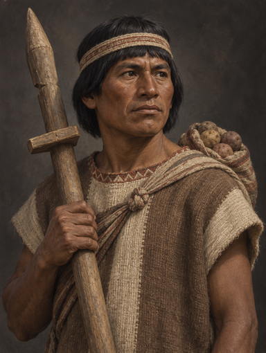
Recraft · runa, edad I
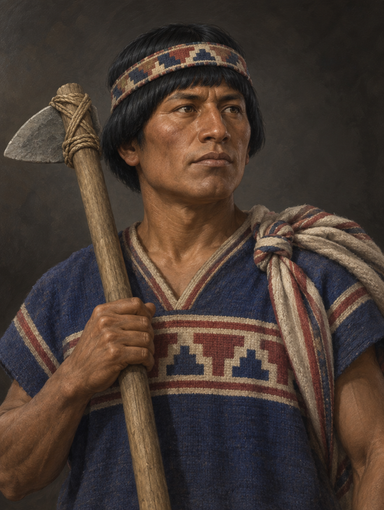
Recraft · runa, edad II
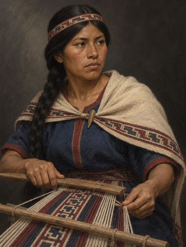
Recraft · runa mujer, edad II
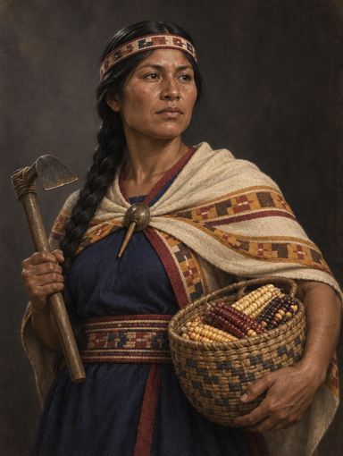
Recraft · runa mujer, edad III
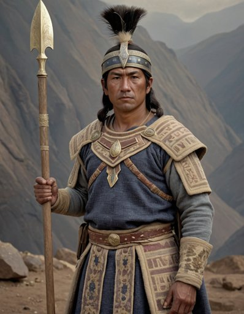
Local · lancero inca · 25,5 s (primera, carga el modelo)
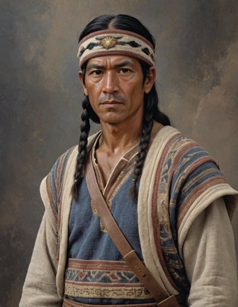
Local · hondero inca · 13,6 s
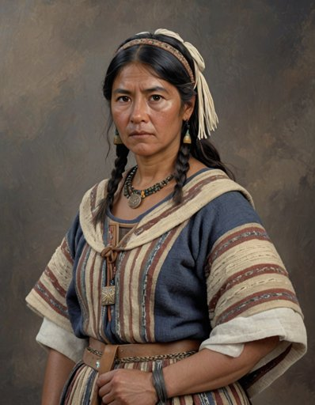
Local · aldeana mapuche · 13,4 s
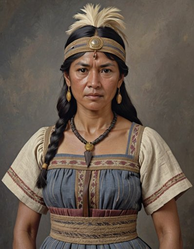
Local · aldeana guaraní · 13,5 s
Bien: la luz, el fondo oscuro con mancha, la paleta y la textura de pintura se parecen a Recraft. Sale en 13 a 14 s por imagen, gratis y sin cuota.
Mal: el modelo no sabe de pueblos. La mapuche y la guaraní salen vestidas de inca, porque la referencia es inca y el texto pesa poco. El lancero trae hombreras de fantasía y el guaraní plumas de «indio genérico». Con IP-Adapter en «linear» fue peor: las cuatro salieron casi iguales y copiaron la cara y la ropa de la referencia. Recraft entiende mejor el texto; la pintura local se le acerca, pero la fidelidad histórica no.
2 · Cinco estilos × cuatro piezas (SDXL)
Mismo modelo, misma semilla por columna y el mismo sujeto; cambia solo el texto de estilo. El estilo A, además, usa los ocho retratos de Recraft por IP-Adapter («style transfer», 0,5). Todas a 1024 px (la pantalla de carga, a 1344×768).
Estilo
Retrato · guerrero inca
Ícono · ariete
Edificio · casa inca
Pantalla de carga 16:9
A · Pintado semirrealistaEl de hoy, tipo AoE IV, con las referencias de Recraft. Es el más coherente con los retratos ya elegidos. El guerrero sale sobrio; la casa y el paisaje, creíbles. Tiempo medio: 13,6 s.
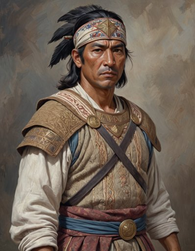
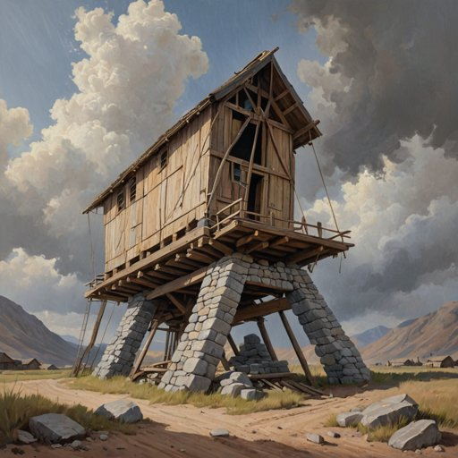
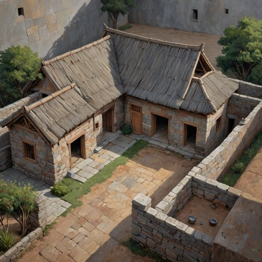
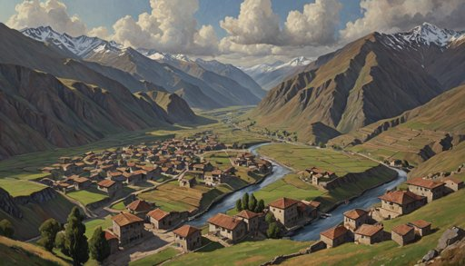
B · Pintado a mano estilizadoTipo Warcraft o Northgard: colores fuertes y siluetas que se leen chicas. Se va a la fantasía: orejas de elfo y hombreras en el guerrero, y techos de pagoda en el paisaje. Pide mucho trabajo de prompt para no caer en estereotipos.
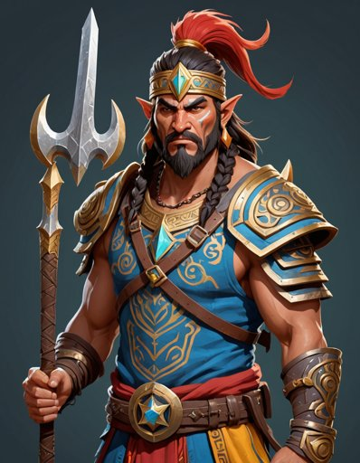
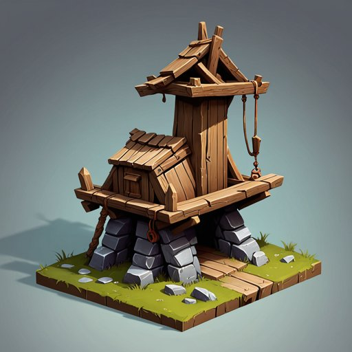
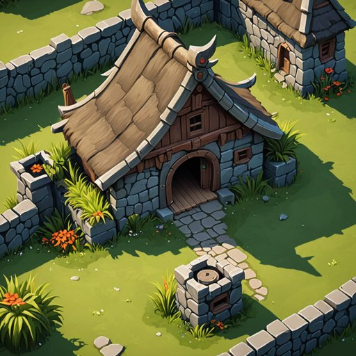
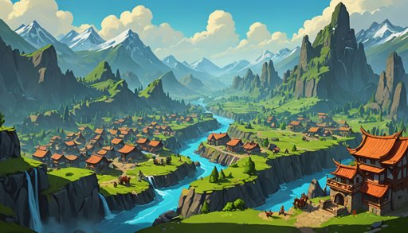
C · Grabado coloreadoTinta con rayado y aguada sobre papel. Encaja con un tono de crónica, y la casa y el paisaje quedan lindos. El guerrero sale con el torso desnudo y un tocado de plumas: el estereotipo que los historiadores pidieron evitar.
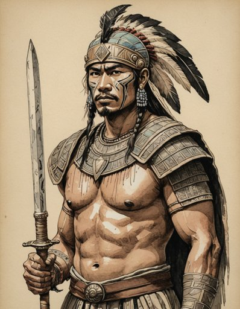
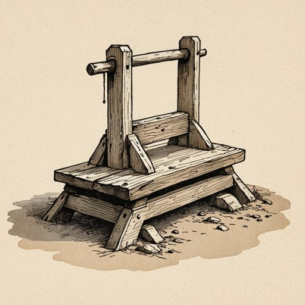
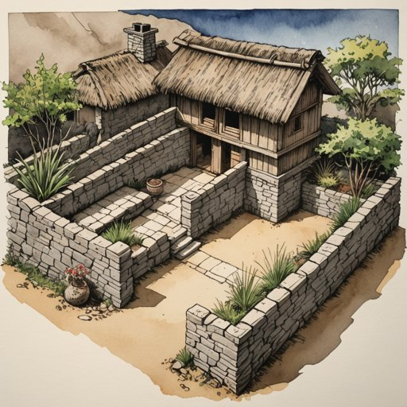
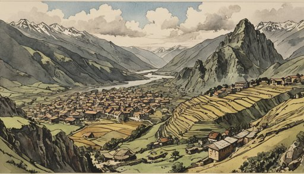
D · Low poly / render 3DSe parecería a los modelos del juego. El ariete y el paisaje salen bien como piezas de juego; el guerrero, con casco romano, y la casa, con entramado europeo. Habría que guiarlo con la forma (ControlNet o el modelo 3D renderizado).
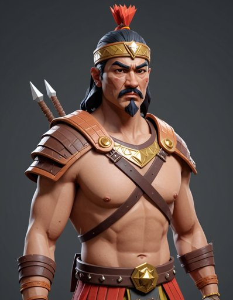
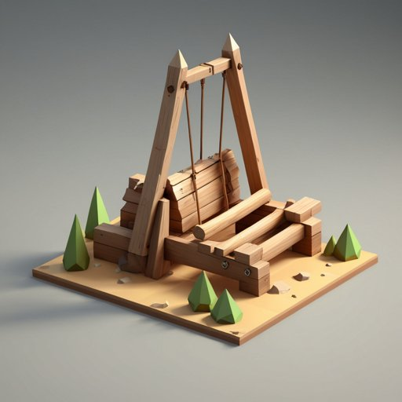
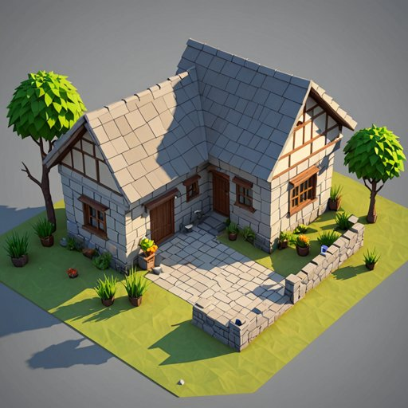
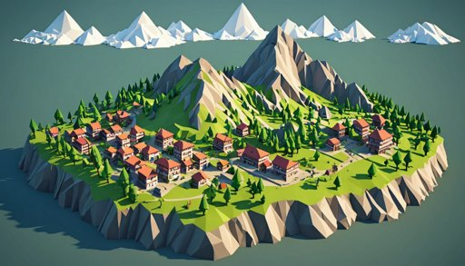
E · Textil / tocapuFormas planas y geométricas de tejido. Es el más propio y el más distinto a AoE, pero el modelo lo trata como decoración: el ariete y la pantalla de carga se vuelven un tapiz sin objeto. Sirve para marcos, fondos y estandartes de interfaz, no para unidades.
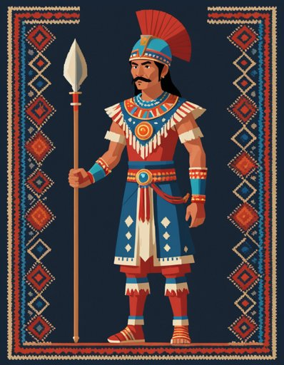
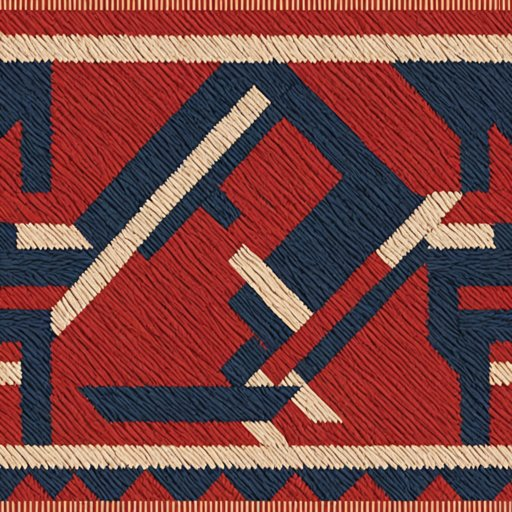
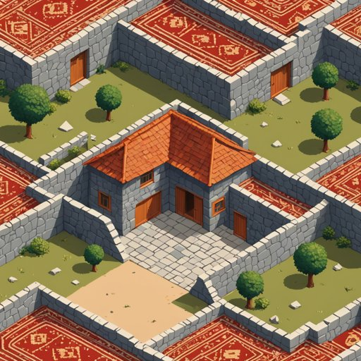
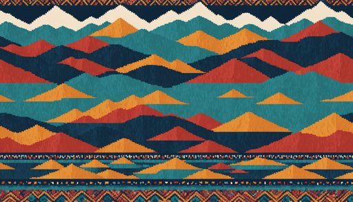
F · FLUX.1 schnell (estilo A)Segunda opción: sin IP-Adapter, solo texto. Es el que mejor sigue el prompt: la porra estrellada, un ariete de verdad, la kancha con techo de ichu y llamas en el paisaje. Más lento: 18 a 25 s, y 89 s la primera (carga 10 GB de modelos). Pantalla a 1024×576.
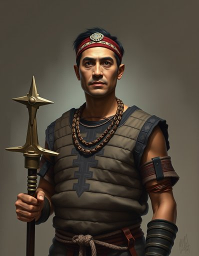
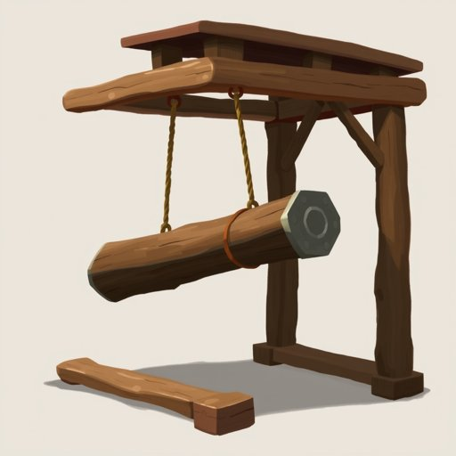
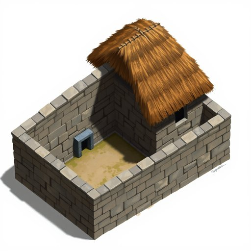
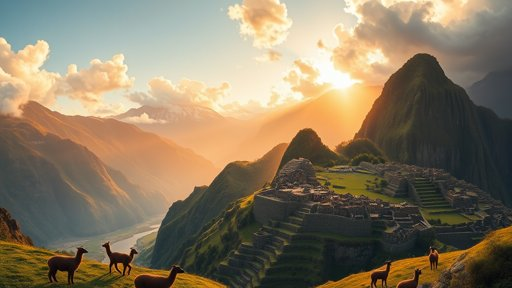
El ariete costó. SDXL no sabe qué es un ariete: en la primera pasada dibujó cañones en los cinco estilos. Con «battering ram» dibujó un árbol con un tronco colgado, un toro (ram) y una bestia (abajo). Lo de la grilla es la tercera pasada, con «máquina de asedio con una viga colgada», y aun así solo C y D se acercan. FLUX lo dibujó bien de entrada.
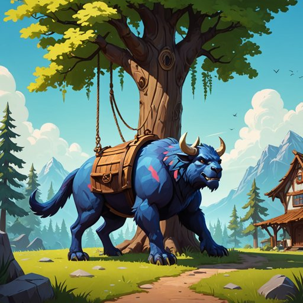
2.ª pasada, estilo B
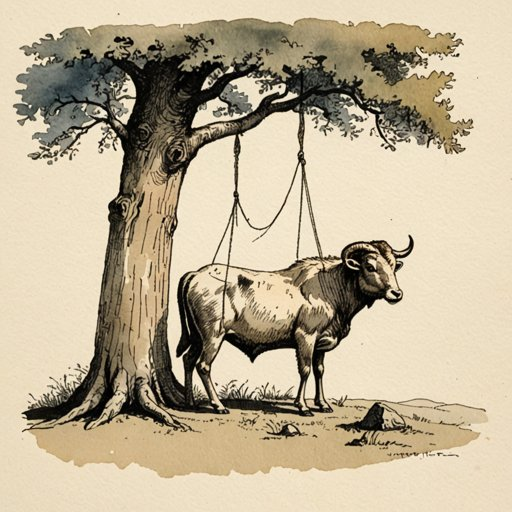
2.ª pasada, estilo C
3 · Tiempos (RTX 2060 Super, modo ahorro de memoria)
Caso
Por imagen
Notas
SDXL Turbo, 8 pasos, 1024 px, con o sin IP-Adapter
13–14 s
unos 10 s de muestreo; el resto es recargar el modelo, porque ComfyUI corre con --disable-smart-memory
SDXL, primera imagen de la tanda
25–75 s
lee 7 GB del disco
FLUX schnell Q4, 4 pasos, 1024 px
18–25 s
2,8 s por paso
FLUX, primera imagen
89 s
lee el modelo (6,8 GB) y el T5 (2,9 GB)
Recraft (referencia)
no medido
en la nube, 2 variantes por prompt, con créditos
4 · Qué estilo seguir
A sigue siendo el más prometedor, porque ya hay retratos aprobados en ese estilo y IP-Adapter lo copia bien. Para los íconos de objetos y edificios conviene FLUX, que entiende el texto. El estilo E sirve como capa de interfaz (marcos, fondos, separadores) y le da identidad propia. El próximo paso es entrenar un LoRA de SDXL con 20 a 30 imágenes aprobadas, para fijar el estilo sin depender de IP-Adapter; ver el README.